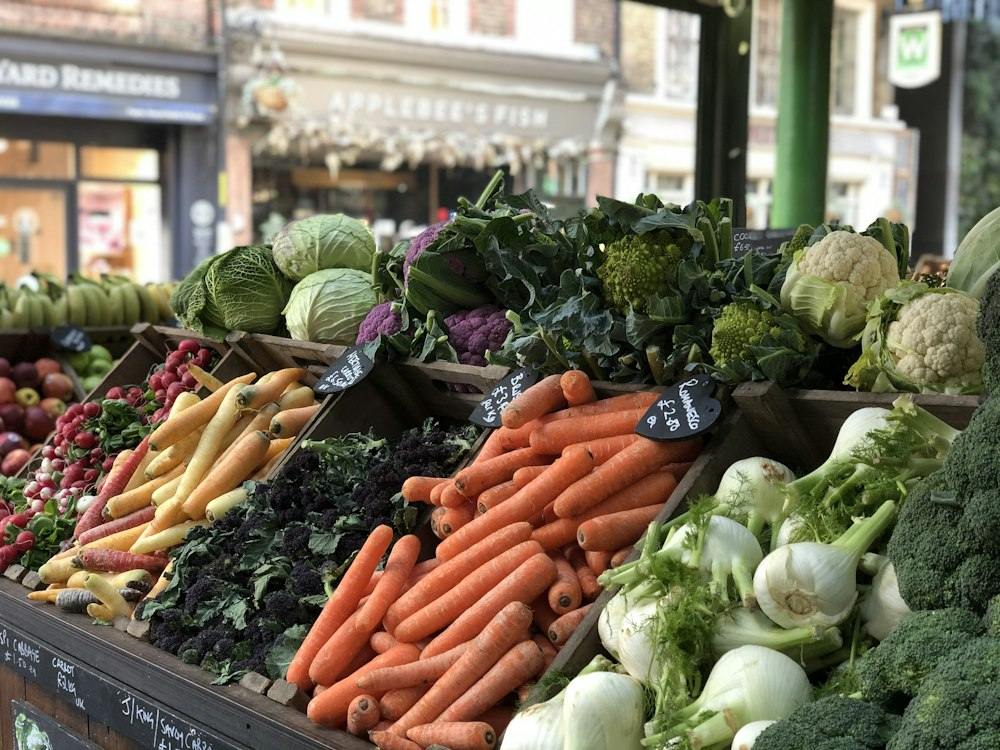

DIRECTO DEL CAMPO
Buenas cosechas.
Mejores conexiones.
Encontrá el próximo lote para tu negocio.

Agricultores y distribuidores cerca de mí
Sin comisión por transacción. AgroMatch se financiará con anuncios y publicidad.
Buscá como lo llamás: palta o aguacate. También entendemos plurales y palabras sin tilde.
Cosechas disponibles
PARA COMPRADORES
Contanos qué necesitás.
Indicá el producto, los kilos y la fecha. Te mostramos los lotes que calzan y qué le falta a los demás.
TU SELECCIÓN
Cosechas guardadas
Los lotes que querés tener a mano.
DE LA RESERVA AL RETIRO
Mis pedidos
Recorré las etapas de tus pedidos de demostración.
PARA PRODUCTORES
Tu cosecha tiene lugar.
Creá o editá el perfil de tu finca o distribuidor
Publicá un lote de prueba y mirá cómo lo encuentran los compradores.